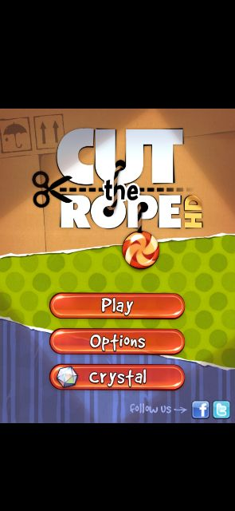
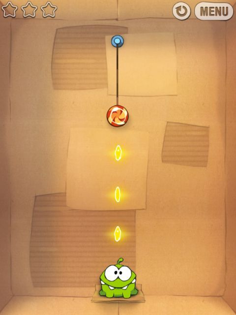
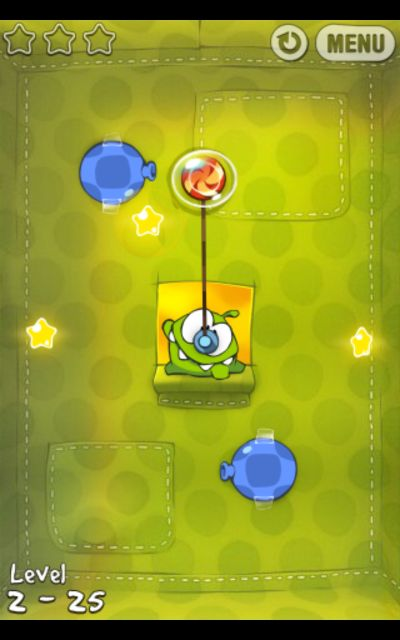
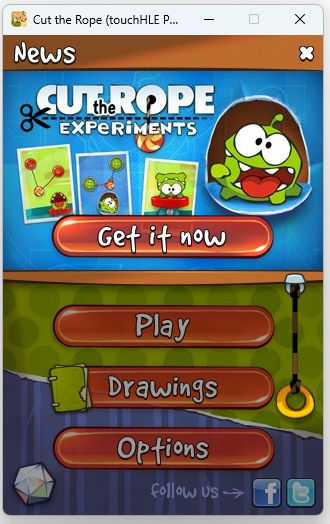
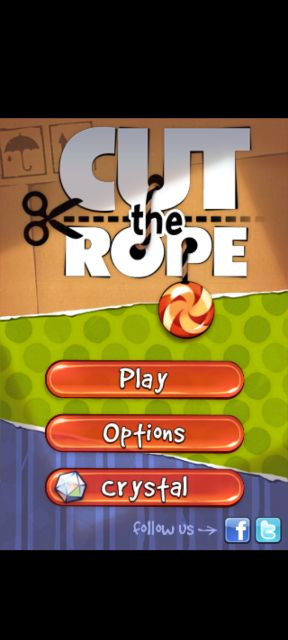
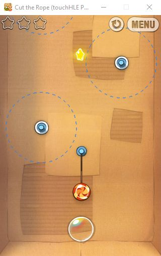
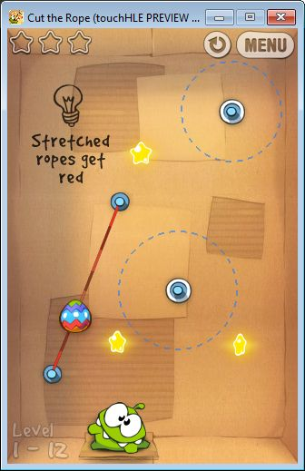
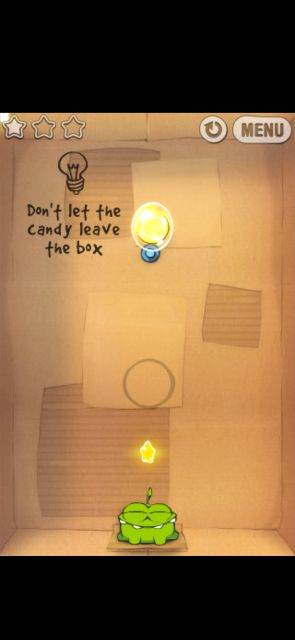
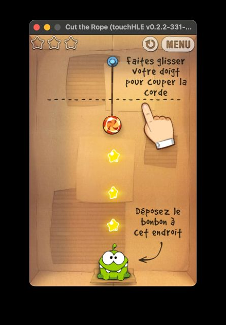

| App name | Cut the Rope |
|---|---|
| Release year | 2010 |
| Developer/Publisher | Chillingo |
| First reported | |
| First reported by | @SpongeVlogger |
| Version number | Display name | Bundle identifier | Minimum iOS version | Best rating | Last updated | First reported by | |
|---|---|---|---|---|---|---|---|
| 1.0 | Cut the Rope | com.chillingo.cuttherope | 3.0 | ⭐️ | @SpongeVlogger | ||
| 1.0 | Cut the Rope | com.chillingo.cuttheropelite | 3.0 | ⭐️ | @Ninja232323 | ||
| 1.1.1 | Cut the Rope | com.chillingo.cuttherope | 3.0 | ⭐️⭐️⭐️⭐️ | @gyattedass | ||
| 1.1.2 | Cut the Rope | com.chillingo.cuttheropelite | 3.0 | ⭐️⭐️⭐️⭐️ | @DaCringeyBaka | ||
| 1.2.1 | Cut The Rope | com.chillingo.cuttherope | 3.0 | ⭐️⭐️⭐️⭐️ | @JuanDaBoi | ||
| 1.2.1 | Cut the Rope | com.chillingo.cuttheropehd | 3.2 | ⭐️⭐️⭐️⭐️ | @hr56g45678888eh-arch | ||
| 1.3 | Cut the Rope | com.chillingo.cuttherope | 3.0 | ⭐️⭐️⭐️⭐️ | @yeah6Nine | ||
| 1.4 | Cut the Rope | com.chillingo.cuttherope | 3.0 | ⭐️⭐️⭐️⭐️ | @ciciplusplus | ||
| 1.5 | Cut the Rope | com.chillingo.cuttherope | 3.0 | ⭐️⭐️⭐️⭐️ | @TheAwesomeBlue | ||
| 1.7.1 | Cut the Rope | com.chillingo.cuttherope | 3.0 | ⭐️ | @nighto |
| Version number | touchHLE version | Operating system | GPU | Scale hack supported? | Rating | Reported | Reported by | Remarks | Screenshot |
|---|---|---|---|---|---|---|---|---|---|
| 1.2.1 | v0.2.3-70-ga8071972 | Android 14 | Mali-G57 | Yes | ⭐️⭐️⭐️⭐️ | @hr56g45678888eh-arch | View | ||
| 1.2.1 | v0.2.3-52-g691353af | Windows 10 | Intel(R) HD Graphics 5500 | Yes | ⭐️⭐️⭐️⭐️ | @YellowPerson24 | Works fine, except when the music loops again, the game will freeze. | View | |
| 1.1.1 | touchHLE PREVIEW v0.2.2-496-gada77ee | Android 11 | PowerVR Rogue GE8320 | Didn't test | ⭐️⭐️⭐️⭐️ | @gyattedass | The game works, there is a small issue upon clicking on some buttons. | View | |
| 1.0 | v0.2.2-351-g714290e | Windows 10 | Intel(R) HD Graphics 4600 | Didn't test | ⭐️ | @Ninja232323 | Crashes at launch | ||
| 1.5 | v0.2.2-331-g7bccc7c | Windows 11 | NVIDIA GeForce RTX 3050 Laptop GPU | Partially | ⭐️⭐️⭐️⭐️ | @TheAwesomeBlue | Slight issues like crashes on some buttons, but game is playable | View | |
| 1.2.1 | touchHLE PREVIEW v0.2.2-347-g8b3ffbf | Android 11 | I don't know | Didn't test | ⭐️⭐️⭐️⭐️ | @JuanDaBoi | Game runs fine, video intro is skipped and clicking on the crystal button or social media buttons will crash. Nothing much else. | View | |
| 1.0 | v0.2.2-331-g7bccc7c | Windows | NVIDIA GeForce RTX 4060 | Didn't test | ⭐️ | @KazumaSatoudesu | thread 'main' panicked at src\environment.rs:787:13: Error during CPU execution: MemoryError | ||
| 1.1.2 | v0.2.2-331-g7bccc7c | Windows 10 | Intel(R) HD Graphics 620 | Partially | ⭐️⭐️⭐️⭐️ | @DaCringeyBaka | Managed to pass nearly the entire game without experiencing crashes. | View | |
| 1.7.1 | v0.2.2-331-g7bccc7c | Windows | NVIDIA GeForce RTX 4060 | Didn't test | ⭐️ | @nighto | Crashes immediately with: thread 'main' panicked at src\frameworks\foundation\ns_dictionary.rs:367:5: assertion `left != right` failed | ||
| 1.3 | v0.2.2-331-g7bccc7c | Windows 11 v23H2 | Nvidia GT 610 | Partially | ⭐️⭐️⭐️⭐️ | @yeah6Nine | Game is fully playable. Video intro is skipped. Buttons like the social networks and the crystal button crashes the game. | View | |
| 1.4 | v0.2.2-331-g7bccc7c | Android | PowerVR GE8320 | Partially | ⭐️⭐️⭐️⭐️ | @TheAwesomeBlue | Star collect animation displays on the top left corner instead of where the star is. (see screenshot) | View | |
| 1.4 | v0.2.2-331-g7bccc7ce | Sequoia 15.0 | Apple M1 GPU | Partially | ⭐️⭐️⭐️⭐️ | @ciciplusplus | Game is fully playable. Video intro is skipped. Some menus (like social networks or payments) can crash. | View | |
| 1.0 | 0.2.2-287-g5b4fadb | Windows 11 | Nvidia GTX 1650 | Couldn't test | ⭐️ | @hostedbyjustus | |||
| 1.0 | v0.2.1 | Windows 10.0.19045 | Intel(R) HD Graphics 630 | Didn't test | ⭐️ | @SpongeVlogger |
| Rating | Description |
|---|---|
| ⭐️ | Completely broken: app crashes immediately without any user interaction. |
| ⭐️⭐️ | Only (part of) the main menu, intro or similar is working. |
| ⭐️⭐️⭐️ | Some of the main content of the app works, but with major issues. |
| ⭐️⭐️⭐️⭐️ | The main content of the app works (e.g. entire game is playable) with only small issues. |
| ⭐️⭐️⭐️⭐️⭐️ | Everything works. The app is fully usable. |








